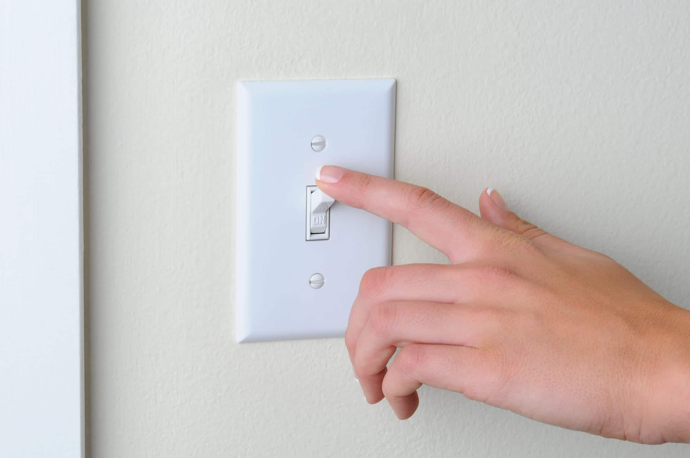

UN goal 11:
Sustainable Cities and Communites
By Anthony Holladay
What is this goal?
 UN goal 11 is a goal that links to global warming and it means that all cities should be able to not cause any increse in global warming. This means that you'll need things to reduce carbon dioxide as well as get rid of carbon dioxide. One way a lot of pepole think of this goal is a goal that combines a lot of other goals. This goal is one of the most important goals, it tackles a whole bunch of diffrent goals at once which makes it a difficult goal to conqour. Sustainable cities and communites include getting rid of carbon dioxide(CO2) and producing less carbon dioxide.
UN goal 11 is a goal that links to global warming and it means that all cities should be able to not cause any increse in global warming. This means that you'll need things to reduce carbon dioxide as well as get rid of carbon dioxide. One way a lot of pepole think of this goal is a goal that combines a lot of other goals. This goal is one of the most important goals, it tackles a whole bunch of diffrent goals at once which makes it a difficult goal to conqour. Sustainable cities and communites include getting rid of carbon dioxide(CO2) and producing less carbon dioxide.
What is already being done?
People are already planting plants in their houses to decrease global warming, however, that is not enough as we have not reached net-zero yet. Planting trees is not enough as when the trees are burnt all of the carbon dioxides they have stored in the trunk of the tree is all realised which defeats the purpose of growing the tree in the first place. What people are doing right now is they are reducing the amount of CO2 that is released into the atmosphere. Doing so is not a complete solution because at some point there will still be too much CO2 in the atmosphere but this will drastically slow the process down.
What else can be done?

If you would like to help out with this serious issue here are some ways you can help:
- Turn off your lights when you exit a room
- Open the window instead of turn the air conditioning on
- Go to sustainability donation sites
- Use a blanket instead of turning the heater on
- Walk to the store instead of drive
These are only some ways of helping, most ways of reducing electricity will help with the major problem. Just remember, any amount of help, no matter big or small, is vital in the bigger picture.
Why help?
 There is no doubt that global warming is a big issue and needs to be resolved or Earth could suffer horrendous consequences. These consequences can and will negatively affect everyone's lives. This is why we need to help, if it doesn't affect you directly it will affect your children or other people that matter to you such as friends or family. So knowing that this issue will one way or another affect you negatively eventually, proves that you should put this UN goal ahead of other habits that you can get out of like not turning the lights off or AC off when you exit a room, remember: an action, no matter big or small, is highly beneficial to the solving of this goal.
There is no doubt that global warming is a big issue and needs to be resolved or Earth could suffer horrendous consequences. These consequences can and will negatively affect everyone's lives. This is why we need to help, if it doesn't affect you directly it will affect your children or other people that matter to you such as friends or family. So knowing that this issue will one way or another affect you negatively eventually, proves that you should put this UN goal ahead of other habits that you can get out of like not turning the lights off or AC off when you exit a room, remember: an action, no matter big or small, is highly beneficial to the solving of this goal.
What industries are effecting this issue?
Although many industries are affecting this issue, a lot of the problem comes from the 900 billion dollars(HKD) fast fashion industry. When it comes to removing stains from cheap clothes, bleach chlorine can and will be used. It stays in the clothes and wherever that item of clothing touches or goes to, that area becomes contaminated with bleach. Bleach can contaminate drinking water as when it goes into the washing it cannot be filtered out with filters easily, so this causes huge problems to sustainability. One way you can help with this issue of contaminated water is to buy clothes from reliable sources and ensure that there are no harmful chemicals in those clothes. Another way is to wear your items of clothing more often rather than getting new ones. It is shown that the average woman with the average income wears an item of clothing 7-10 times before they throw it away.
Learn more
 If you would like to learn more about this goal you can go to the un website which has an infographic but there is also a more informative website and a quick overview of the topic. These are the most reliable sources because they are primary sources but if you don't mind secondary sources then there is a Hong Kong goverment statsic website or a Natinal Geographic ofical website which you may also like to visit.
If you would like to learn more about this goal you can go to the un website which has an infographic but there is also a more informative website and a quick overview of the topic. These are the most reliable sources because they are primary sources but if you don't mind secondary sources then there is a Hong Kong goverment statsic website or a Natinal Geographic ofical website which you may also like to visit.
Graph One
This graph was an FY2B class survey including the design teacher, Mr Grant.
Graph Two
This graph was an FY2B class survey including the design teacher, Mr Grant.
Graph Three
This graph was an FY2B class survey including the design teacher, Mr Grant.
Graph Four
This graph was an FY2B class survey including the design teacher, Mr Grant.
Works Cited
Images
Make Cities and Human Settlements Inclusive, Safe, Resilient and Sustainable.
Sustainable Development Matters, https://sdmatters.cuhk.edu.hk/sdgs/11-cities/.
Vujić, Katja, and Photography by Max Burkhalter.
6 Tips to Help Your Plants Thrive.
Architectural Digest, 19 Nov. 2019,
https://www.architecturaldigest.com/story/best-plant-care-tips.
Why Can't You Just Turn off the Lights?
Your Teen Magazine, 2 Oct. 2020,
https://yourteenmag.com/family-life/communication/just-turn-off-the-lights.
Dreamer, Green.
35 Environmental Organizations and Nonprofits for a Sustainable Future (List and Ways You Can Get Involved).
GREEN DREAMER, GREEN DREAMER, 8 Dec. 2020,
https://greendreamer.com/journal/environmental-organizations-nonprofits-for-a-sustainable-future.
Sustainable Cities and Communities: The Evolution.
Impakter, 9 Aug. 2021,
https://impakter.com/contributing-sdg-11/.
Glasco, Jon.
Smart Sustainable Cities in Spain: The Commitment to a Green Economy.
The Global Smart City Knowledge Center, Bee Smart City GmbH, 13 Jan. 2022,
https://hub.beesmart.city/en/strategy/smart-environment/smart-cities-in-spain-the-commitment-to-a-green-economy.
Written by Andy Dunn, Writer.
7 Innovative Projects Making Cities More Sustainable.
World Economic Forum,
https://www.weforum.org/agenda/2020/09/cities-sustainability-innovation-global-goals/.
Staff, Jobsite Editorial, and Jobsite Editorial StaffLaunched in 2016.
The Full Story: Top 10 Green Projects around the U.S.
Jobsite, 23 Oct. 2017,
https://www.procore.com/jobsite/the-full-story-top-10-green-projects-around-the-u-s/.
Gallery of CTBUH Announces Winners of Its 2015 Urban Habitat Competition - 2.
ArchDaily,
https://www.archdaily.com/770705/ctbuh-announces-winners-of-its-2015-urban-habitat-competition/55b04cc0e58eceb3300001be-ctbuh-announces-winners-of-its-2015-urban-habitat-competition-image.
Guest, SAP.
SAP Brandvoice: Can 'Fast Fashion' Be Sustainable?
Forbes, Forbes Magazine, 22 Nov. 2019,
https://www.forbes.com/sites/sap/2019/11/21/can-fast-fashion-be-sustainable/?sh=6b9238272c9c.
Joowwww.
File:Un Emblem Blue.svg.
Wikimedia Commons, 2008,
https://commons.wikimedia.org/wiki/File:UN_emblem_blue.svg.
Infomation
Goal 11: Sustainable Cities and Communities.
The Global Goals, 15 Mar. 2022, https://www.globalgoals.org/11-sustainable-cities-and-communities.
Goal 11 | Department of Economic and Social Affairs.
United Nations, United Nations, https://sdgs.un.org/goals/goal11.
Environment, UN. Goal 11: Sustainable Cities and Communities.
UNEP, https://www.unep.org/explore-topics/sustainable-development-goals/why-do-sustainable-development-goals-matter/goal-11.
Code
Geoff Graham on Jul 11, and Geoff Graham. Typewriter Effect: CSS-Tricks.
CSS, 15 Dec. 2017, https://css-tricks.com/snippets/css/typewriter-effect/.


{kind=link}